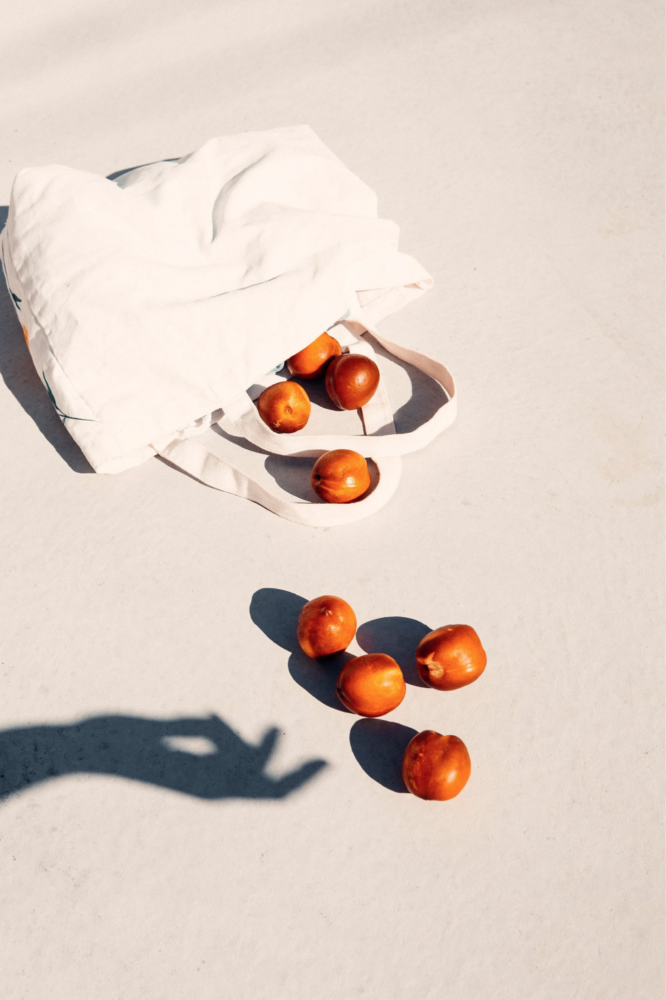

秋のシンフォニー
空気が
ひんやりとしてきました。
夜が
だんだんと長くなります。
りん りん りん
きら きら きら
風に乗って届く
虫と星の歌声を、
野菜たちが、
軽くて長い呼吸を合わせ
気持ちよさそうに聞いています。
あまりに夜が気持ちいいので、
こっそりと
夜更かしする野菜たちも
多いみたい。
そんな、秋のファームです。
空気が
ひんやりとしてきました。
夜が
だんだんと長くなります。
りん りん りん
きら きら きら
風に乗って届く
虫と星の歌声を、
野菜たちが、
軽くて長い呼吸を合わせ
気持ちよさそうに聞いています。
あまりに夜が気持ちいいので、
こっそりと
夜更かしする野菜たちも
多いみたい。
そんな、秋のファームです。
ABOUT

何も足さない。
何もひかない。
ありのままのイノチ。
シンフォニーファームは、
「肥料」や「農薬」を使わずに、
自然を尊重し、寄り添いながら野菜を作っています。
ファームについて、ぜひご覧ください。
畑のやさいセット

自然のリズムで育った
とれたての「畑野菜」を
毎週、ご自宅に。
畑から10キロ圏内のお客さまへは、
ご自宅まで配送も行っております。
野菜の“旬”が連れてくる季節の肌感を、お楽しみください。
VOICE
やさいセットご利用の
お客さまの声を、
ぜひお聞きください。
子育て中のご家族、ご夫婦、おひとり暮らしの方。
さまざまな方々に、畑のやさいセットをご利用いただいております。
選んでくださった理由、ご感想など、
どうぞご覧になってください。
Q & A

よくいただくご質問を
まとめました。
気になることがございましたら、
まずはこちらから
チェックしてみてください。
CONTACT
やさいのこと。はたけのこと。
どんなことでも、
お気軽におたよりください。